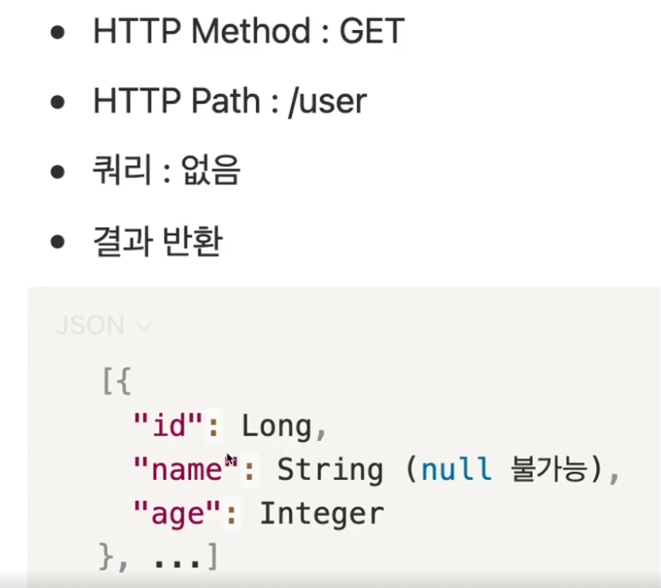

@SpringBootApplication과 서버
서버란?
- Server
기능을 제공하는 것
회원가입 기능/ 정보 가져오기 기능/ 추천 기능 등
것(물건,컴퓨터)가 기능을 제공합니다.
컴퓨터가 이런 기능을 수행해준다. 그래서 컴퓨터를 서버라고 부르기도 합니다.
서버와 요청
기능을 제공하기 위해서는 누군가의 요청 이 있어야합니다.
서버에게도 요청을 해야 정해진 기능을 수행합니다.
손님이 사장님에게 주문(요청)을 할때는 주문서를 보고 손짓이나 말로 전달합니다.
그러면 서버에 요청을 하려면 어떻게 해야할까?
네트워크란 무엇인가?
서버에게 요청을 할 때 네트워크(인터넷 )을 통해서 요구사항을 전달합니다.
- IP
인터넷이 연결된 컴퓨터의 고유 번호를 말합니다.
- 포트(PORT)
컴퓨터 안에 동작하는 여러 프로그램중에 특정 하나를 가리킵니다.
서버(컴퓨터)에 인테넷을 통해서 특정 프로그램(포트)에 전달할때는 다음과 같이 입력합니다. 192.168.0.5:8080 여기서 192.168.0.5는 IP를 의미를 하고, 8080은 포트를 의미합니다.
다시 정리해보면 192.168.0.5 인터넷 고유번호에 연결된 컴퓨터에 8080포트에서 실행되는 특정 프로그램을 말합니다.
- Domain Name
192.168.0.5처럼 외우기 어려운 숫자대신 사람들이 외우기 쉬운이름을 넣습니다. 이러한 체계를 DomainNameSystem(DNS)이라고 합니다.
HTTP와 API란 ?
웹 사이트에서 주문을 할 때 운송장에 필요한 정보를 기입합니다.
보내는 곳, 받는 곳, 이름, 번호, 내부 물건의 종류를 기입하는 것처럼 서버에 요청을 할 때에도 정해진 표준이 있습니다.
음식점에서 판매하는 정해진 메뉴를 보고 주문을 요청하는 것처럼 서버에 요청을 할 때도 서버(음식점)과 나(클라이언트)는 정해진 약속(메뉴) 이 필요합니다.
HTTP(Hyper Text Transfer Protocol)
서버와 통신을 하기 위한 표준(protocol )을 말합니다.
이걸 HTTP라고 합니다.
- GET
HTTP Method라고 하며 서버에게 요청하는 행위를 말합니다.
- Host
요청을 받는 서버(컴퓨터)의 주소와 포트를 말합니다.
192.168.0.5가 아니라 이해하기 쉬운 말로 DNS로 표현했습니다.
naver.com 서버의 3000번 포트에서 동작하는 프로그램을 의미합니다.- /portion?color=red&count=2
3000번 포트에서 자원의 위치(
/portion)과 세부 조건을 의미합니다. 구분자는&을 사용합니다.
세부조건을Query라고 합니다.
정보를 보내는 2가지 방법
- Query
GET에서 사용됩니다.
- Body
POST에서 사용됩니다.
다양한 HTTP Method
- GET
서버로부터 정보를 요청하는 메소드입니다. URL에 데이터를 첨부하여 전송하며, 주로 데이터를 검색할 때 사용됩니다. GET 메소드는 요청이 캐싱될 수 있으며, 브라우저에서는 뒤로 가기 버튼을 누르면 이전 요청을 재전송할 수 있습니다.
- POST
서버로 데이터를 제출하는 메소드입니다. 주로 서버에 데이터를 생성하거나 업데이트하기 위해 사용되며, 데이터가 URL에 노출되지 않고 요청 본문에 포함됩니다. POST 요청은 캐싱되지 않으며, 데이터의 길이에 제한이 없어서 대용량 데이터를 전송할 수 있습니다.
- PUT
서버에 리소스를 업데이트하는 메소드입니다. PUT 요청은 명시적으로 해당 리소스의 상태를 변경하는 것을 나타내며, 요청 본문에 업데이트할 데이터를 포함합니다.
- DELETE
서버에서 리소스를 삭제하는 메소드입니다. DELETE 요청은 지정된 리소스를 삭제하도록 서버에 요청합니다.
HTTP 메소드의 특징
Idempotent (멱등성): 동일한 요청을 여러 번 보내더라도 동일한 결과가 나와야 합니다. GET, PUT, DELETE 메소드는 멱등적이지만, POST 메소드는 멱등적이지 않습니다.
Safe (안전성): 요청이 서버의 상태를 변경하지 않는 경우에 안전한 메소드입니다. GET 메소드는 안전하며, POST, PUT, DELETE 메소드는 안전하지 않습니다.
캐싱 가능: 응답이 캐시될 수 있는지 여부를 나타냅니다. GET 메소드는 캐싱 가능하지만, POST, PUT, DELETE 메소드는 캐싱되지 않습니다.
요청 본문(Body): 요청 본문에 데이터를 포함하여 서버로 전송할 수 있습니다. POST, PUT, PATCH 메소드에서 주로 사용됩니다.
API(Application Program interface)
API는 서버와 클라이언트 간의 상호작용을 위한 규칙을 정의합니다.
서버는 요청을 처리할 수 있는 인터페이스를 제공하고, 클라이언트는 이 인터페이스를 사용하여 요청을 보냅니다. 이러한 규칙은 데이터를 교환하고 상호작용하는 데 필요한 명세서로, 서버와 클라이언트 간의 통신을 표준화 하여 서로 다른 시스템 간의 통합을 용이하게 합니다
API는 HTTP Method, Header, Body 세 가지를 통해서 규칙을 정의할 수 있습니다.
URL
프로토콜(protocol): https://
호스트(host): www.example.com
포트(port): 8080
경로(path): /api/resource
쿼리스트링(query string): ?id=123 (추가정보)
이 URL은 HTTPS 프로토콜을 사용하여 www.example.com 호스트의 8080 포트에 위치한 /api/resource 경로에 있는 자원에 대한 요청을 나타냅니다. 쿼리스트링은 id 매개변수가 123 값으로 설정되어 있음을 나타냅니다.
HTTP 응답
클라이언트는 요청을 한 컴퓨터
서버는 요청에 대한 응답을 하는 컴퓨터
HTTP 응답도 요청과 마찬가지로 규칙이 있습니다.
첫줄 - 상태코드(200,404,500등)
여러줄 - 헤더
한 줄 띄기
여러줄 - 바디
응답은 상태코드, 헤더, 바디 세 가지를 사용해서 HTTP 응답이 구성됩니다.
정리
(
WEB을 통한) 컴퓨터 간의 통신은 HTTP라는 표준화된 방식이 있다.HTTP 요청의 핵심은
HTTP Method(행위)와Path(경로)다요청에서 데이터를 서버에 전달하기 위한 방법은
Query와Body다HTTP 응답은
상태코드(status가 핵심이다.클라이언트와 서버는 HTTP를 주고 받으며 기능을 동작하는데 이때 정해진 규칙을
API라고 한다.
----------------------------------------(분기)
GET API 개발하고 테스트하기
API를 개발하기 전에 해야 할 것!
HTTP 요청과 응답에 대한 API Specification(명세)를 정해야합니다.
API를 정의한다면 다음 네가지를 정해야합니다.
HTTP Method -> GET
HTTP Path -> /add
쿼리 (key와 value) -> int num1/int num2
API의 반환 결과 -> 숫자- 덧셈의 결과
우리가 작성해야하는 HTTP 응답을 스프링부트가 알아서 정해진 규칙에 맞게 HTTP 응답을 만들고 BODY에 들어가는 내용만 작성하면됩니다.
POST API 개발하고 테스트하기
HTTP에서는 데이터를 전달할 때 Query와 Body를 사용합니다.
쿼리를 이용하는 데이터 전달 방식은 GET만 사용하며, Body를 사용하는 행위는 POST,PUT,DELETE가 됩니다.
BODY에 데이터를 작성하는 문법중 하나는 JSON입니다.
JSON이란
객체 표기법, 즉 무언가를 표현하기 위한 형식입니다.
json은 java의 Map<Object,Object> 구조와 유사합니다.
값으로 다양한 타입이 들어올 수 있습니다. String, int, List 등이 들어올 수 있습니다.
곱셈 API를 만든다고 생각합니다.
API Spec(
API 명세서)를 정의합니다.HTTP Method
HTTP Path
HTTP Body(JSON)
API의 응답 결과
단순한 데이터를 받는 상황이기 때문에 GET을 사용하는 것이 맞습니다.
HTTP Method ->
POSTHTTP Path ->
/multiplyHTTP Body(Json) ->
{ "num1": 5, "num2": 6 }API의 반환결과 -> 곱셈결과
요청에 필요한 모든 요소가 들어있습니다. HTTP ',HTTP Bdoy`
그리고 Body에 데이터 형식이 json일 경우 스프링 부트에서 데이터 바인을 하려면 특정 애노테이션으로 프레임워크에게 알려줘야합니다.
API 요구사항 먼저 확인
사용자
도서관의 사용자를 등록할 수 있다.(이름 필수,나이 선택)
도서관 사용자의 목록을 볼 수 있다.
도서관 사용자 이름을 업데이트 할 수 있다.
도서관 사용자를 삭제할 수 있다.
책
도서관에 책을 등록 및 삭제할 수 있다.
사용자가 책을 빌릴 수 있다.
다른 사람이 그 책을 빌렸다면 빌릴 수 없습니다.
사용자가 책을 반납할 수 있습니다.
유저 등록
마음대로 API를 만드는게 아니라 클라이언트와 서버의 약속이므로 먼저 작성합니다.
예를 들어 API Spec을 정한다면 다음과 같습니다.
HTTP Method: Post HTTP Path: /user HTTP Body: (JSON)
응답은 상태 코드와 헤더 , 바디가 중요하므로 확인해야합니다.
사용자 등록은 상태코드 200,헤더 기본, 바디는 없는 응답 객체를 내려줍니다.
웹 관련 어노테이션이 클래스나 메서드에 호출이 되면 해당 URL로 진입시 해당 메서드가 매핑되어 호출됩니다.
유저 조회

스프링 부트는 HTTP 응답 객체를 대신 만들어줍니다.
반환값을 HTTP BODY에 사용자가 원하는 양식으로 작성을 해줍니다.
그래서 결과의 BODY를 보면
List형식이기 때문에 반환타입은List가 되어야합니다.추가로 id를 요청했습니다. 요청 객체와 응답 객체는 별도로 관리하는 것이 불필요한 데이터 노출을 줄일 수 있습니다.
정리
서버는 제공하다 + ER => 제공하는 것
것이라는건 물건이라는 의미로 웹 서버는 웹 기능을 제공하는 것을 말한다.
기능을 제공하기 위해서는 다른 곳에서 서버에게 특정 행위와 함께 데이터를 가지고 요청을 해야한다.
요청과 응답을 하기 위해서는 서로의 위치를 알아야하고 그것을 네트워크에서는 IP라고 합니다.
그리고 IP는 인터넷이 연결된 컴퓨터를 말하며 컴퓨터 중에서 특정 프로그램에게 전달해야하기 때문에 포트라는 자세한 프로그램 위치까지 작성하게 됩니다.
서로 IP:PORT를 가지게 되며 사용자가 편하게 사용하기 위해서 도메인 이름 시스템이라는 DNS를 통해서 작성할 수 있습니다.
택배를 보내기 위해서 정해진 규칙이 있듯이 서버에게 요청내용을 전달하기 위해서는 정해진 규칙이 있는데
그중 하나를 HTTP라고 합니다.
HTTP는 요청과 응답이 있으며,
요청은 HTTP METHOD, HTTP HEADER, HTTP BODY가 3가지 요소이며 응답은 HTTP STATUS CODE, HTTP HEADER, HTTP BODY로 3가지 요소입니다.
요청시 데이터를 서버에 전달하는 방식은 쿼리와 바디를 사용할 수 있으며, 쿼리는 GET, 바디는 POST,PUT,DELETE HTTP METHOD가 사용합니다.
쿼리는 URL에 &를 구분자로 KEY=VALUE를 통해서 데이터를 전달하며 바디는 HTTP BODY에 작성되는 문자열 형식에 따라 다른 모습을 나타냅니다.